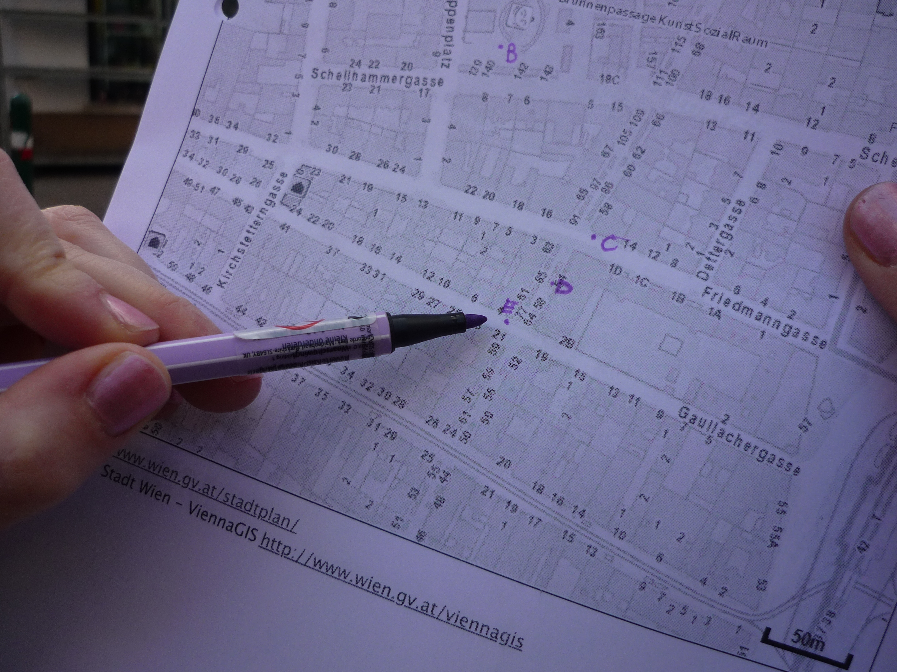
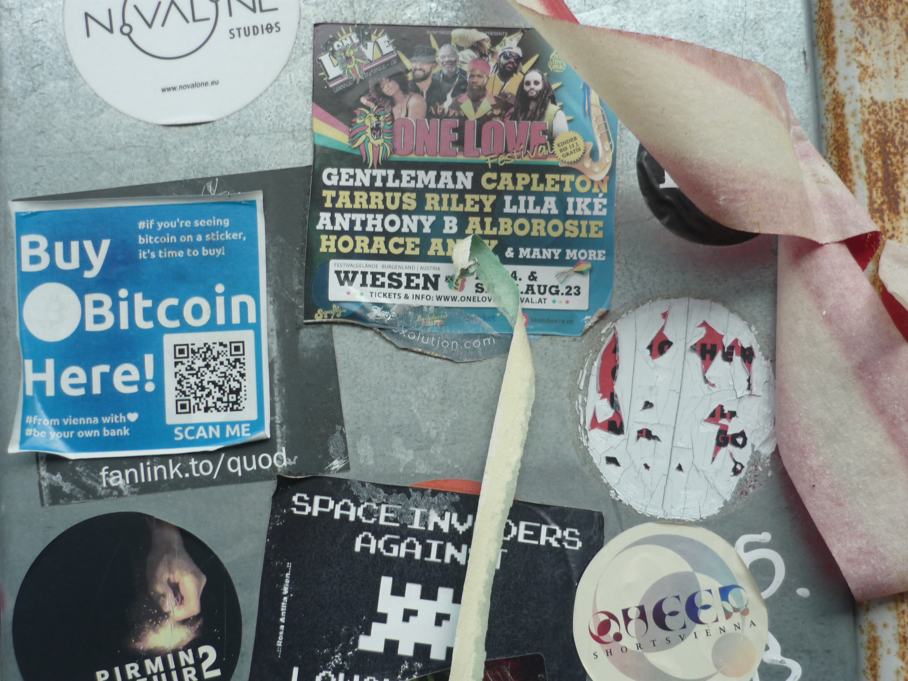

Mapping Commons is an artistic research project that investigates stickers as indicators of places of commons and practices of commoning in urban space. The project is inspired by Silvia Federici’s feminist framework of the commons, which understands commoning as a relational, collective, and ongoing practice.
For this work, I photographed and catalogued over 100 stickers found on street signs and traffic lights in the area surrounding my apartment. Each sticker was documented with attention to its origin, iconography, political message, and spatial context.
From this material, I created a structured dataset and programmed an interactive map visualizing the geographic distribution and connections between sticker-based commoning practices. The resulting visualization revealed a networked, mycelial structure of commoning across urban space, highlighting informal, cross-regional practices of cooperation and community.
Methodologically, the project combines ethnographic observation, digital mapping, and artistic research to make visible forms of collective infrastructure that often remain unnoticed in everyday life. Stickers function here as both medium and marker: ephemeral, informal, and collectively produced traces of shared political and social imaginaries.
The project can be read as an analysis of sticker culture as a medium through which places of commons emerge and persist, understood in light of Federici’s concept of commoning as an active, relational process rather than a fixed resource.
"""
